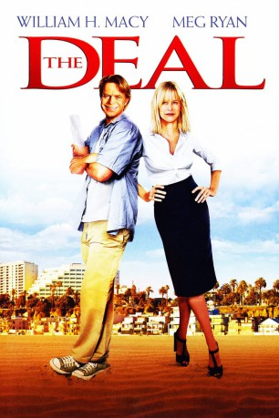

#9690 The Deal - Eine Hand wäscht die andere...
Alternativ: The Deal
 
 IMDB-Wertung: 5.7 / 10
IMDB-Wertung: 5.7 / 10  Metascore: 0
Metascore: 0 
Charlie Berns ist ein Hollywood-Vetran, eine Regie-Legende. Aber er hat seine Karriere und auch gleich sein ganzes Leben aufgegeben, er denkt an Selbstmord. Bis ihm sein Neffe ein geniales Drehbuch vorlegt. So beschließt Charlie, seine Karriere noch einmal in Schwung zu bringen. Zugpferd des Filmes, und das Druckmittel um die nötigen 100 Millionen Dollar zu bekommen, soll Bobby Mason ein Top-Action-Darsteller werden. Das einzige, was Charlie nervt ist die Super-Zicke Diedre Hearn von der Produktionsfirma, die alles überwachen soll. Doch dann wird der Star gekidnappt und das Projekt wird gestoppt. Charlie und Diedre tun sich zusammen und beschließen, weiterzudrehen - auch gegen den Willen des Studios. Das führt natürlich zu Komplikationen, Chaos und Verwirrung an deren Ende Charlie und Diedre feststellen, dass sie sich bis über beide Ohre ineinander verliebt haben, und das, obwohl sie so gar nicht zueinander passen.
Jahr: 2008
Dauer: 99 Minuten
FSK: 6
Land: Kanada Studio: EuroVideoTonspuren:
Untertitel: Deutsch,
Auflösung: 1080p (1920x1080) Größe: 6799 MB
Genre: Komödie, Liebe
Regisseur: Steven Schachter
Drehbuch: William H. Macy, Steven Schachter, Peter Lefcourt
Soundtrack: Jeff Beal
Darsteller:
 William H. Macy als Charlie Berns
William H. Macy als Charlie Berns Meg Ryan als Deidre Hearn
Meg Ryan als Deidre Hearn LL Cool J als Bobby Mason
LL Cool J als Bobby Mason Elliott Gould als Rabbi Seth Gutterman
Elliott Gould als Rabbi Seth Gutterman Jason Ritter als Lionel Travitz
Jason Ritter als Lionel Travitz Fiona Glascott als Fiona Hicks
Fiona Glascott als Fiona Hicks- Sharon Raginiano als Levi Rosenwald
- John Carson als Nigel Bland
- David Hunt als Grier Clark
 Jeremy Crutchley als Ian Chadwick
Jeremy Crutchley als Ian Chadwick Kate Blumberg als Linda
Kate Blumberg als Linda- Tere Morris als Catherine Oxenmoor
- Adrian Galley als Andrei
 Todd Weeks als Brad Emprin
Todd Weeks als Brad Emprin Kenneth Fok als Wing
Kenneth Fok als Wing- Brett Granstaff als Peter the Writer
 Darron Meyer als KGM Agent
Darron Meyer als KGM Agent- Thomas Gumede als George
- Natalie Becker als Gabriella
 Tyrone Keogh als Bagel PA
Tyrone Keogh als Bagel PA Matthew Dylan Roberts als Vladimir
Matthew Dylan Roberts als Vladimir- Julia Anastasopoulos als Camera Assistant
- Natasha Rees-Davies als Maya
- Aiden Lithgow als Skip Miller
- Sean Higgs als Hans Bleimer
- Nina Shepherd als Melanie Lewis
- Jeanne Neilson als Claire Johnson
- George Jackos als Howard Draper
- Neil McCarthy als Glenn
- José Domingos als Mark Rovner
- Fred Abrahamse als Colin
- Jaymie Carter als KGM Agent
- Shawn Tanaka als Brad's Assistant
- Anton Voster als Deidre's Limo Driver
- Bernard Fisher als Airport Cop
- Nicola Jackman als Entertainment Reporter
- Christine Adzich als Entertainment Reporter
- Jean Wingis als Premiere Handler
- Olivia Blumberg als Girl with Camera
- Keren Setton als Girl with Camera
- Vuyisile Pandle als Driver
- George Worthmore als Danny Turner
- Sydney Hall als Bobby's Assistant
- Christopher Clark Gates als American Ambassador
- Leslie Mongezi als Embassy Assistant
- Tyrel Meyer als Fiona 'Stunt' Double
- John Van Zyl als Bobby's Trainer
- Sue Lloyd-Roberts als TV Reporter
- Mmatjatji Ramaphala als Camera Assistant
- Mudi Mudau als South African Airways Rep
Datei: X:\2008(A-F)\Deal - Eine Hand wäscht die andere..., The (2008, FSK6, 1920x1080).mkv seit 04.10.2018
Festplatte: HD 2007(A-Z)-2008(A-F)
 Es gibt insgesamt 66 Filme in der Gruppe '2008(A-F)'
Es gibt insgesamt 66 Filme in der Gruppe '2008(A-F)'